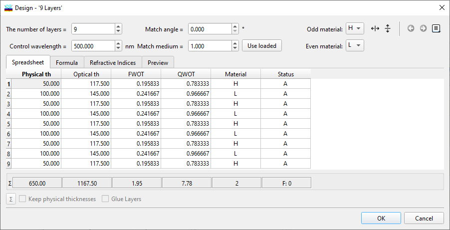
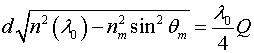
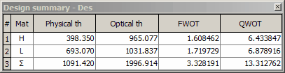
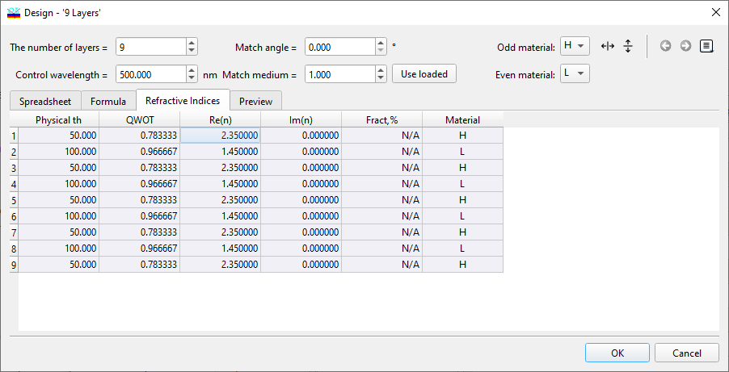

Design Editor
Design Editor
Navigation: OptiLayer Menu Commands > Data Menu > Design Database >
Design Editor
` <idh_material_abbreviations.html>`__ ` <idh_design.html>`__ ` <idh_design_formula.html>`__
The Design Editor enables direct editing of a design in memory (refer to the section on Modifying Design) or within the Design database.

Upper controls
Use the “Number of layers” field to adjust the number of layers in a design. Newly added layers are assigned a default thickness of one quarter-wavelength and are given a material according to the preferences set in the “Materials” field. The maximum number of layers that can be used in OptiLayer is mainly limited only by the computer’s performance and memory size, which is currently 65536. The “Control wavelength” field is used to correlate the physical thickness of a given design to its optical thicknesses. This correlation is based on the refractive indices of materials loaded into memory, the match angle value, and the match medium refractive index, and is defined as follows:

Here, Q represents the thickness in quarter-wave optical thickness (QWOT) units, λ0 is the control wavelength, θm is the match angle, n(λ0) is the material’s refractive index at the control wavelength, nm is the refractive index of the match medium, and d is the physical thickness. It is important to note that altering the control wavelength modifies the physical thickness but leaves the optical, full-wave optical thickness (FWOT), and QWOT thicknesses unchanged (provided the “Keep physical thickness” box is unchecked). If the goal is to maintain the physical thickness of the design layers, simply adjust the state of the “Keep physical thickness” option. The “Match angle” field enables you to accurately adjust physical thicknesses to optical thicknesses at oblique angles of incidence. How thicknesses will change when varying the “Match Angle” parameter once again depends on the state of the “Keep physical thickness” option. The “Match medium” field permits the change of the incident medium’s refractive index used for matching physical thicknesses to optical thicknesses. You can enter its value manually, or opt to use the incident medium refractive index that is loaded into memory. Press the “Use loaded” button to populate this entry with the current control wavelength’s incident medium refractive index.
Spreadsheet
The Physical Thickness column showcases the layer’s thickness in metric units (micrometers, nanometers, or Angstroms), which can be set in the Units page of the Configuration menu. The values here are deduced from the optical thickness calculations.
Optical Thickness represents the product of the physical thickness and the refractive index at the specified control wavelength. Displayed in metric units, which are configurable in the Configuration menu, optical thickness is fundamental to any OptiLayer design.
FWOT (Full-Wave Optical Thickness) denotes optical thickness in units of the control wavelength.
QWOT (Quarter-Wave Optical Thickness) measures the optical thickness as a quarter of the control wavelength length, serving as a critical unit in thin film design.
In the Material column, you input character abbreviations to identify layer materials. These materials, once loaded into memory, are selectable from the General Information Window and can be modified via the Materials page of the Options dialog. The physical thickness calculation for a layer is based on the corresponding material’s refractive index if its abbreviation matches a material in memory. Note, optical, FWOT, and QWOT thickness measurements remain unaffected by material choice. An alert will be triggered if a non-existing material abbreviation is attempted to be added to the design.
The Glue Layers checkbox is a feature that enables users to control the automatic merging of adjacent layers made from the same material. If you employ the Formula tab to input a formula that results in the creation of multiple adjacent layers of the same material, activating this option can be beneficial to prevent the accumulation of an excessive number of layers that don’t add any unique physical properties to the design. Conversely, there are circumstances where you might prefer to keep layers separate, even if they are made of the same material. This is particularly true if the material in question has a variable or adjustable composition index on a per-layer basis. In such cases, despite sharing an abbreviation, different layers can exhibit varied refractive indices. Another scenario involves rugate and rugate-like coatings, which consist of numerous thin layers designated by the same abbreviation, yet their refractive indices are dictated by the Fraction parameter of the associated material. By default, the Glue Layers option is enabled. This means that OptiLayer will automatically consolidate adjacent layers composed of the same material into a single layer, with the total thickness being the sum of all individual layers combined. This automatic merging is a common procedure during the synthesis process, streamlining the design by reducing redundancy without compromising the overall structure’s efficacy.
Summary
Pressing the small “Σ” button opens an additional Summary window, which provides more detailed information regarding the total values in the current design:

In the Design Summary window, you can view the total values corresponding to the material of each layer within the design.
Formula The “Formula…” button enables the generation and modification of a Design Formula. For further information on the application of the Design Formula option, please refer to the next topic.
Refractive Indices
When utilizing materials with changeable properties, it is possible to edit the values of refractive indices and extinction coefficients through the “Refractive Indices” tab within the Design Editor. 
Values that cannot be altered are displayed with disabled attributes, indicating that they are fixed. You are only able to modify values that correspond to materials designated with the Per Layer changeable status. This status detail can be further explored in the Editing Layer Material topic. Additionally, if a material with a “Changeable Composition” and “Per Layer” status is present within the design, it is the Fraction values that can be edited, as opposed to the refractive index and extinction coefficient values.
Preview
The Preview tab provides a view of the refractive index profile of your design, where thickness is consistently represented in Quarter-Wave Optical Thickness (QWOT) units.
For convenient editing access, you can utilize any of the Spreadsheet Editing Tools available from the main toolbox, the toolbar, or by using the corresponding keyboard shortcuts. Additionally, the Reverse Layers command found in the Edit Menu allows you to invert the layer order in your design. To confirm and apply any edits, click the OK button. If you wish to discard all changes and exit the Design editor, simply click the Cancel button.